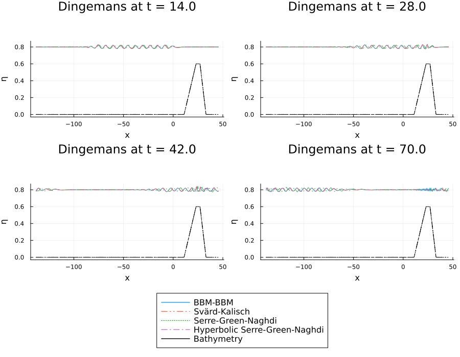

Dingemans Experiment
The Dingemans experiment provides a classic benchmark for validating dispersive shallow water models against experimental data. This experiment, conducted by Dingemans in 1994 , simulates waves generated by a wave maker that propagate over a varying underwater topography (bathymetry). See more at [Dingemans1994] and [Dingemans1997]
Experimental Setup
The experiment features waves with a small amplitude (A = 0.02) that encounter a trapezoidal bathymetry profile. The bottom topography starts flat, then rises to form an underwater "hill" before descending back to the original depth. This setup tests how well different dispersive wave models can capture the complex wave transformations that occur when waves interact with varying bottom topography.
The bathymetry profile consists of:
- A flat section from the wave maker to x = 11.01
- A linearly increasing slope from x = 11.01 to x = 23.04 (maximum height of 0.6)
- A flat plateau from x = 23.04 to x = 27.04
- A linearly decreasing slope from x = 27.04 to x = 33.07
- A flat section beyond x = 33.07
This configuration allows researchers to study wave shoaling (changes in wave characteristics due to depth variations), which is crucial for understanding coastal wave dynamics.
Numerical Simulation
Let's implement the Dingemans experiment and compare the performance of different dispersive shallow water models available in DispersiveShallowWater.jl.
First, we load the necessary packages:
using DispersiveShallowWater, OrdinaryDiffEqTsit5, PlotsNext, we set up the different equation systems we want to compare:
# BBM-BBM equations with variable bathymetry
bbmbbm = BBMBBMEquations1D(bathymetry_type = bathymetry_variable,
gravity = 9.81, eta0 = 0.0)
# Svärd-Kalisch equations with specific parameter set
sk = SvaerdKalischEquations1D(gravity = 9.81, eta0 = 0.8, alpha = 0.0,
beta = 0.27946992481203003, gamma = 0.0521077694235589)
# Serre-Green-Naghdi equations with variable bathymetry
sgn = SerreGreenNaghdiEquations1D(bathymetry_type = bathymetry_variable,
gravity = 9.81)
# Hyperbolic approximation of Serre-Green-Naghdi equations
hysgn = HyperbolicSerreGreenNaghdiEquations1D(bathymetry_type = bathymetry_mild_slope,
lambda = 100.0, gravity = 9.81)
# for actual simulations a higher lambda (~500) is recommended
# it is chosen so low to be able to see the difference between it
# and the SGN equation.The initial condition initial_condition_dingemans provided by DispersiveShallowWater.jl automatically sets up the trapezoidal bathymetry and initial wave field.
initial_condition = initial_condition_dingemans
boundary_conditions = boundary_condition_periodicWe create a computational domain that is large enough to contain the entire experimental setup, with the wave maker positioned appropriately. Especially, we extend the domain to the left, such that the waves entering the domain on the left due to the periodic boundary conditions, do not interfere with the original wave train.
coordinates_min = -138.0
coordinates_max = 46.0
N = 512
mesh = Mesh1D(coordinates_min, coordinates_max, N)For the spatial discretization, we use fourth-order accurate summation-by-parts operators:
accuracy_order = 4
solver = Solver(mesh, accuracy_order)We set up the time integration parameters. The experiment runs for a relatively long time to observe the full wave propagation and interaction with the bathymetry:
tspan = (0.0, 70.0)
saveat = range(tspan..., length = 500)Now we create semidiscretizations for each equation system. Each semidiscretization bundles the mesh, equations, initial condition, solver, and boundary conditions:
semi_bbmbbm = Semidiscretization(mesh, bbmbbm, initial_condition, solver,
boundary_conditions = boundary_conditions)
semi_sk = Semidiscretization(mesh, sk, initial_condition, solver,
boundary_conditions = boundary_conditions)
semi_sgn = Semidiscretization(mesh, sgn, initial_condition, solver,
boundary_conditions = boundary_conditions)
semi_hysgn = Semidiscretization(mesh, hysgn, initial_condition, solver,
boundary_conditions = boundary_conditions)We convert each semidiscretization to an ODE problem and solve it using the Tsit5 time integrator:
ode_bbmbbm = semidiscretize(semi_bbmbbm, tspan)
ode_sk = semidiscretize(semi_sk, tspan)
ode_sgn = semidiscretize(semi_sgn, tspan)
ode_hysgn = semidiscretize(semi_hysgn, tspan)
options = (; abstol = 1e-7, reltol = 1e-7, save_everystep = false, saveat = saveat)
sol_bbmbbm = solve(ode_bbmbbm, Tsit5(); options...)
sol_sk = solve(ode_sk, Tsit5(); options...)
sol_sgn = solve(ode_sgn, Tsit5(); options...)
sol_hysgn = solve(ode_hysgn, Tsit5(); options...)Visualization and Comparison
For proper comparison, we need to account for the fact that the BBM-BBM equations use a different reference level ($\eta_0 = 0$) compared to the other equations. We create a custom conversion function which allows us to easily shift the BBM-BBM results:
# BBM-BBM equations need to be translated vertically for comparison
shifted_waterheight(q, equations) = waterheight_total(q, equations) + 0.8
DispersiveShallowWater.varnames(::typeof(shifted_waterheight), equations) = ("η",)Finally, we create comparison plots at four different time instances to observe how the waves evolve as they interact with the bathymetry:
# Define parameters
times = [14.0, 28.0, 42.0, 70.0]
y_limits = (-0.03, 0.87)
# Model configurations: (semidiscretization, solution, label, conversion_function, linestyle)
models = [
(semi_bbmbbm, sol_bbmbbm, "BBM-BBM", shifted_waterheight, :solid),
# Svärd-Kalisch has a phase shift which need to be adjusted for in the initial condition
# (semi_sk, sol_sk, "Svärd-Kalisch", waterheight_total, :dashdotdot),
(semi_sgn, sol_sgn, "Serre-Green-Naghdi", waterheight_total, :dot),
(semi_hysgn, sol_hysgn, "Hyperbolic Serre-Green-Naghdi", waterheight_total, :dashdot)
]
# Create snapshot plots for each time
snapshot_plots = []
for time_val in times
step_idx = argmin(abs.(saveat .- time_val)) # get the closest point to the time_val
p = plot(title="t = $time_val", ylims=y_limits)
for (i, (semi, sol, label, conversion, linestyle)) in enumerate(models)
plot!(p, semi => sol,
step=step_idx,
label=label,
conversion=conversion,
plot_bathymetry=true,
legend=false,
title="Dingemans at t = $(time_val)",
suptitle="",
linewidth=[2 1], # 1 for the bathymetry
linestyles=[linestyle :solid], # :solid for the bathymetry
color=[i :black], # black for the bathymetry
)
end
push!(snapshot_plots, p)
end
# Create legend plot
legend_plot = plot(legend=:top, framestyle=:none, legendfontsize=11)
for (i, (_, _, label, _, linestyle)) in enumerate(models)
plot!(legend_plot, [], [], label=label, linestyles=linestyle, linewidth=2, color=i)
end
plot!(legend_plot, [], [], label="Bathymetry", color=:black,)
xlims_zoom = [(-25, 15), (0, 40), (5, 45), (-100, -60)]
snapshot_plots_zoom = [plot(snapshot_plots[i], xlims=xlims_zoom[i], ylims=(0.75, 0.85), title="Zoomed in at t = $(times[i])") for i in 1:4]
# Combine all plots
all_plots = [snapshot_plots..., legend_plot, snapshot_plots_zoom...]
plot(all_plots...,
size=(900, 1100),
layout=@layout([a b; c d; e{0.14h}; f g; h i]),
)
The results show how different dispersive wave models capture the wave evolution over the trapezoidal bathymetry.
Plain program
Here follows a version of the program without any comments.
using DispersiveShallowWater, OrdinaryDiffEqTsit5, Plots
# BBM-BBM equations with variable bathymetry
bbmbbm = BBMBBMEquations1D(bathymetry_type = bathymetry_variable,
gravity = 9.81, eta0 = 0.0)
# Svärd-Kalisch equations with specific parameter set
sk = SvaerdKalischEquations1D(gravity = 9.81, eta0 = 0.8, alpha = 0.0,
beta = 0.27946992481203003, gamma = 0.0521077694235589)
# Serre-Green-Naghdi equations with variable bathymetry
sgn = SerreGreenNaghdiEquations1D(bathymetry_type = bathymetry_variable,
gravity = 9.81)
# Hyperbolic approximation of Serre-Green-Naghdi equations
hysgn = HyperbolicSerreGreenNaghdiEquations1D(bathymetry_type = bathymetry_mild_slope,
lambda = 100.0, gravity = 9.81)
# for actual simulations a higher lambda (~500) is recommended
# it is chosen so low to be able to see the difference between it
# and the SGN equation.
initial_condition = initial_condition_dingemans
boundary_conditions = boundary_condition_periodic
coordinates_min = -138.0
coordinates_max = 46.0
N = 512
mesh = Mesh1D(coordinates_min, coordinates_max, N)
accuracy_order = 4
solver = Solver(mesh, accuracy_order)
tspan = (0.0, 70.0)
saveat = range(tspan..., length = 500)
semi_bbmbbm = Semidiscretization(mesh, bbmbbm, initial_condition, solver,
boundary_conditions = boundary_conditions)
semi_sk = Semidiscretization(mesh, sk, initial_condition, solver,
boundary_conditions = boundary_conditions)
semi_sgn = Semidiscretization(mesh, sgn, initial_condition, solver,
boundary_conditions = boundary_conditions)
semi_hysgn = Semidiscretization(mesh, hysgn, initial_condition, solver,
boundary_conditions = boundary_conditions)
ode_bbmbbm = semidiscretize(semi_bbmbbm, tspan)
ode_sk = semidiscretize(semi_sk, tspan)
ode_sgn = semidiscretize(semi_sgn, tspan)
ode_hysgn = semidiscretize(semi_hysgn, tspan)
options = (; abstol = 1e-7, reltol = 1e-7, save_everystep = false, saveat = saveat)
sol_bbmbbm = solve(ode_bbmbbm, Tsit5(); options...)
sol_sk = solve(ode_sk, Tsit5(); options...)
sol_sgn = solve(ode_sgn, Tsit5(); options...)
sol_hysgn = solve(ode_hysgn, Tsit5(); options...)
# BBM-BBM equations need to be translated vertically for comparison
shifted_waterheight(q, equations) = waterheight_total(q, equations) + 0.8
DispersiveShallowWater.varnames(::typeof(shifted_waterheight), equations) = ("η",)
# Define parameters
times = [14.0, 28.0, 42.0, 70.0]
y_limits = (-0.03, 0.87)
# Model configurations: (semidiscretization, solution, label, conversion_function, linestyle)
models = [
(semi_bbmbbm, sol_bbmbbm, "BBM-BBM", shifted_waterheight, :solid),
# Svärd-Kalisch has a phase shift which need to be adjusted for in the initial condition
# (semi_sk, sol_sk, "Svärd-Kalisch", waterheight_total, :dashdotdot),
(semi_sgn, sol_sgn, "Serre-Green-Naghdi", waterheight_total, :dot),
(semi_hysgn, sol_hysgn, "Hyperbolic Serre-Green-Naghdi", waterheight_total, :dashdot)
]
# Create snapshot plots for each time
snapshot_plots = []
for time_val in times
step_idx = argmin(abs.(saveat .- time_val)) # get the closest point to the time_val
p = plot(title="t = $time_val", ylims=y_limits)
for (i, (semi, sol, label, conversion, linestyle)) in enumerate(models)
plot!(p, semi => sol,
step=step_idx,
label=label,
conversion=conversion,
plot_bathymetry=true,
legend=false,
title="Dingemans at t = $(time_val)",
suptitle="",
linewidth=[2 1], # 1 for the bathymetry
linestyles=[linestyle :solid], # :solid for the bathymetry
color=[i :black], # black for the bathymetry
)
end
push!(snapshot_plots, p)
end
# Create legend plot
legend_plot = plot(legend=:top, framestyle=:none, legendfontsize=11)
for (i, (_, _, label, _, linestyle)) in enumerate(models)
plot!(legend_plot, [], [], label=label, linestyles=linestyle, linewidth=2, color=i)
end
plot!(legend_plot, [], [], label="Bathymetry", color=:black,)
xlims_zoom = [(-25, 15), (0, 40), (5, 45), (-100, -60)]
snapshot_plots_zoom = [plot(snapshot_plots[i], xlims=xlims_zoom[i], ylims=(0.75, 0.85), title="Zoomed in at t = $(times[i])") for i in 1:4]
# Combine all plots
all_plots = [snapshot_plots..., legend_plot, snapshot_plots_zoom...]
plot(all_plots...,
size=(900, 1100),
layout=@layout([a b; c d; e{0.14h}; f g; h i]),
)References
- Dingemans1994Dingemans (1994): Comparison of computations with Boussinesq-like models and laboratory measurements. URL: https://resolver.tudelft.nl/uuid:c2091d53-f455-48af-a84b-ac86680455e9
- Dingemans1997Dingemans (1997): Water Wave Propagation Over Uneven Bottoms (In 2 Parts). DOI: 10.1142/1241